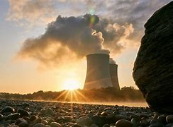
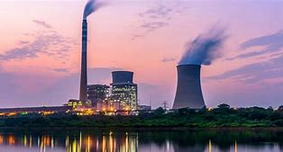
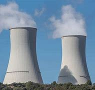
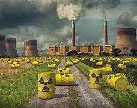

¿Qué es la energía nuclear?
La energía nuclear se genera a partir de reacciones nucleares, liberando grandes cantidades de energía. Se utiliza principalmente en centrales nucleares para producir electricidad.La energía nuclear es la energía que se libera a partir de reacciones nucleares, principalmente mediante la fisión de núcleos de átomos pesados, como el uranio o el plutonio. Este proceso implica la división de un núcleo atómico en dos o más núcleos más ligeros, lo que libera una gran cantidad de energía en forma de calor.
Aquí tienes una explicación más detallada sobre la energía nuclear, abarcando sus principios, funcionamiento, aplicaciones, ventajas, desventajas y el futuro de esta fuente de energía.
1.Principios de la Energía Nuclear
 La energía nuclear se basa principalmente en dos procesos:a)Fisión Nuclear
Definición: Es la división de un núcleo atómico pesado en dos o más núcleos más ligeros. Durante este proceso, se liberan neutrones y una gran cantidad de energía.
Materiales Utilizados: Los isótopos más comunes son el Uranio-235 y el Plutonio-239. El Uranio-235 se encuentra en la naturaleza, mientras que el Plutonio-239 se produce en reactores nucleares a partir de Uranio-238.
b)Fusión Nuclear
Definición: Es el proceso en el que dos núcleos ligeros se combinan para formar un núcleo más pesado, liberando energía.
Ejemplo: La fusión que ocurre en el sol, donde el hidrógeno se fusiona para formar helio, es el proceso que libera la energía solar. Aunque es muy prometedora, la fusión aún no se utiliza de manera comercial para la generación de energía en la Tierra.
2.Funcionamiento de una Central Nuclear
a)Componentes Clave
Reactor Nuclear: El corazón de la planta, donde ocurre la fisión. Contiene combustible nuclear (uranio o plutonio), moderadores (que ralentizan los neutrones), refrigerantes (que extraen el calor) y barras de control (que regulan la reacción).
Sistema de Refrigeración: Utiliza agua o gases para absorber el calor generado por la fisión, que luego se convierte en vapor.
Turbinas y Generadores: El vapor mueve las turbinas conectadas a generadores que producen electricidad.
b)Proceso de Generación de Electricidad
1. La fisión nuclear genera calor en el reactor.
2. El calor convierte el agua en vapor.
3. El vapor mueve las turbinas.
4. Las turbinas hacen girar los generadores, produciendo electricidad.
3.Ventajas de la Energía Nuclear
Bajas Emisiones de Carbono: Durante la operación, las centrales nucleares emiten muy pocas emisiones de gases de efecto invernadero, contribuyendo a la lucha contra el cambio climático.
Alta Eficiencia: La cantidad de energía producida por una pequeña cantidad de combustible nuclear es mucho mayor que la de combustibles fósiles.
Fiabilidad: Las plantas nucleares pueden operar de manera continua durante largos períodos, independientemente de las condiciones climáticas.
Reducción de la Dependencia Energética: Puede reducir la dependencia de combustibles fósiles y diversificar la matriz energética de un país.
4.Desventajas y Desafíos

Gestión de Residuos Radiactivos:La producción de residuos nucleares es uno de los principales desafíos. Los desechos radiactivos deben ser gestionados de manera segura durante miles de años, y actualmente no existe una solución definitiva universalmente aceptada.
Riesgos de Seguridad:Aunque las plantas nucleares son diseñadas con altos estándares de seguridad, siempre existe el riesgo de accidentes, como los ocurridos en Chernobyl y Fukushima, que pueden tener consecuencias devastadoras para la salud y el medio ambiente.
Costos Iniciales Altos: La construcción de plantas nucleares requiere una inversión inicial significativa, y los costos de operación y mantenimiento también son elevados. Esto puede hacer que sea menos atractiva en comparación con otras fuentes de energía.
Largo Tiempo de Construcción: La planificación, construcción y aprobación de plantas nucleares pueden llevar muchos años, lo que retrasa su puesta en marcha y la recuperación de la inversión.
Proliferación Nuclear: La tecnología nuclear puede ser utilizada para fines no pacíficos, como la fabricación de armas nucleares. Esto genera preocupaciones sobre la proliferación nuclear y la seguridad internacional.
Impacto Ambiental
5.Gestión de Residuos Nucleares
Los residuos nucleares son productos de la fisión y pueden permanecer radiactivos durante miles de años. Su gestión incluye:
Almacenamiento Temporal: Los residuos se almacenan inicialmente en piscinas de enfriamiento.
Almacenamiento Geológico Profundo: A largo plazo, se considera el almacenamiento en formaciones geológicas estables, donde los residuos se aíslan del medio ambiente.
Reciclaje: En algunos países, los residuos se procesan para recuperar materiales útiles, aunque este proceso es costoso y complejo.
6.Perspectivas Futuras
Desarrollo de Nuevas Tecnologías: Se están investigando reactores más seguros y eficientes, como los reactores modulares pequeños (SMR) y los reactores de cuarta generación.
Fusión Nuclear: Aunque aún en fase de investigación, la fusión nuclear podría ofrecer una fuente de energía limpia y abundante sin los mismos riesgos que la fisión.
7.Conclusión
La energía nuclear es una opción poderosa para la generación de electricidad, especialmente en el contexto del cambio climático y la necesidad de fuentes de energía sostenibles. Sin embargo, su uso requiere un enfoque cuidadoso para gestionar los riesgos asociados, así como una inversión en tecnología y seguridad. A medida que el mundo busca alternativas a los combustibles fósiles, la energía nuclear seguirá siendo un tema crucial en la discusión sobre el futuro energético.